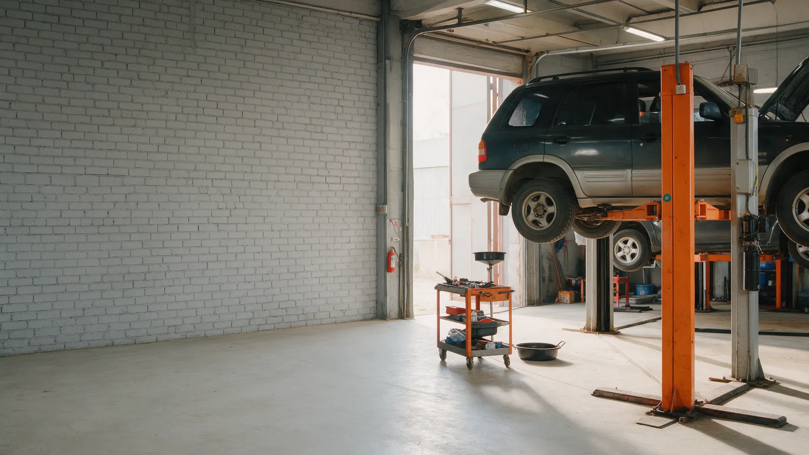
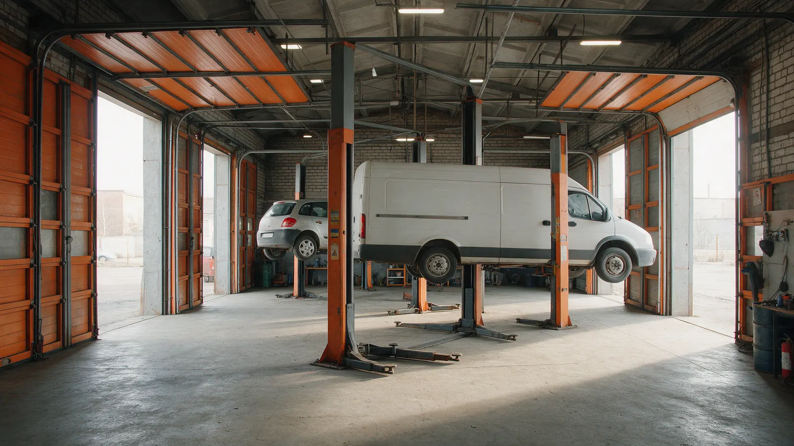
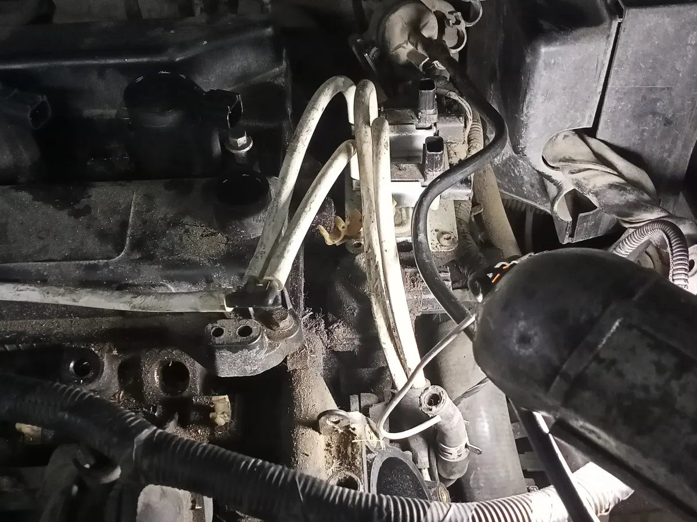
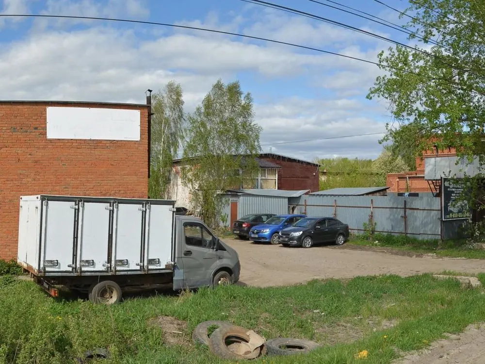

Автосервис в гаражном участке № 8
Автосервис в Глазове: ремонт без выходных, три подъёмника и высокие ворота
Диагностика ходовой, замена масла, ремонт и покраска пластика. Клиенты пишут, что сервис работает без выходных и принимает большие машины. Рейтинг 4,1 на Яндекс.Картах.

- Рейтинг 4,1 на Яндекс.Картах, 41 оценка
- Три подъёмника, высокие ворота
- Работаем ежедневно, с 08:00 до 18:00
Работы и цены
На карточке на Яндекс.Картах прайса нет. Работы ниже названы по отзывам клиентов, цены назовут при обращении.
Что делают
- Диагностика ходовойуточнить
- Замена маслауточнить
- Ремонт автомобиляуточнить
- Покраска пластикауточнить
Цены назовут при обращении.
Как найти и записаться
- 01
Нашли на карте
Гаражный участок № 8, 49/10, Глазов.
- 02
Приехали
Ворота высокие, заезжают и большие машины.
- 03
Описали проблему
Мастера разбираются и называют цену.
- 04
Забрали машину
Работаем ежедневно, в том числе в выходные.



Что пишут клиенты
Работают в выходные
Так пишут сразу двое клиентов.
Большие машины
Из отзывов: Патриот поднимают спокойно, лезут даже длинные Газели.
Быстро разобрались
Клиентка пишет, что нашли причину и отремонтировали.
Оценка клиентов 4,1
41 оценка и 14 отзывов на Яндекс.Картах.
Отзывы с Яндекс.Карт
«Одно из немногих СТО в Глазове, работающее в выходные. 3 подъемника, высокие ворота. Патриот поднимает спокойно. Менял масло, остался доволен.»
Михаил К · 20 сентября 2022
«Отличный сервис, большой подъемник, лезут даже длинные газели.»
Айдар Абашев · 3 декабря 2022
«Большая благодарность, приехала в Глазов и понимаю что в салоне очень холодно, везде смотрела сервисы и попался один, они работают без выходных. Быстро разобрались в чем дело. Отремонтировали.»
Анастасия А. · 17 января 2024
Отзывы с карточки на Яндекс.Картах, без правок.
Контакты
- Адрес
- Гаражный участок № 8, 49/10, Глазов
- Часы
- Ежедневно 08:00-18:00
- Телефон
- добавим по вашему номеру